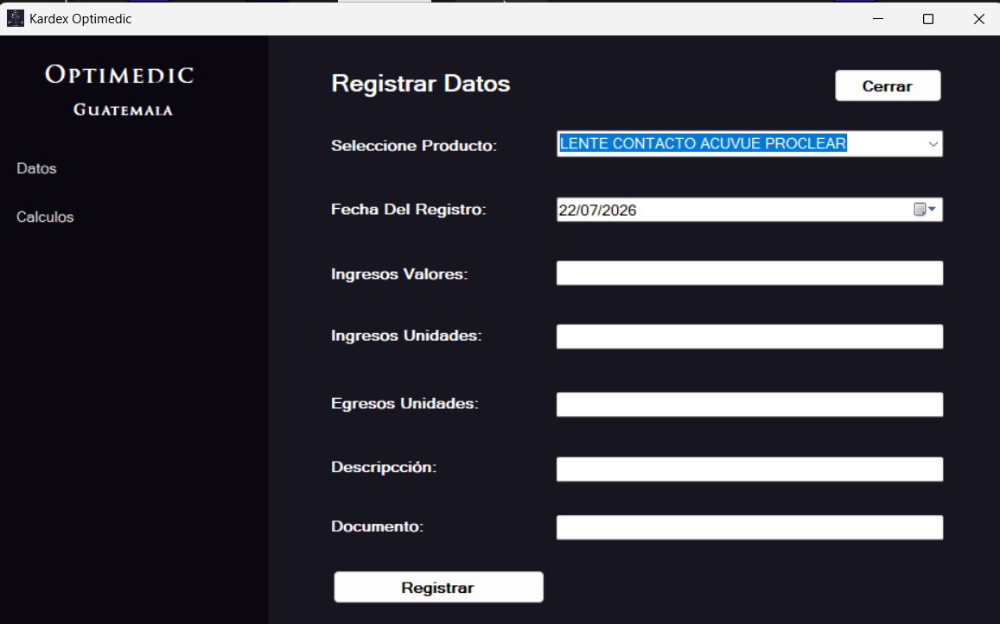
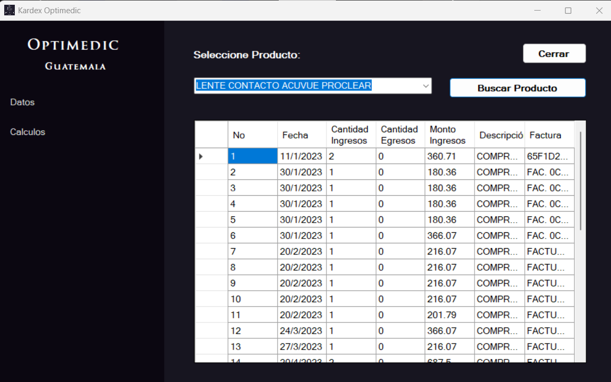
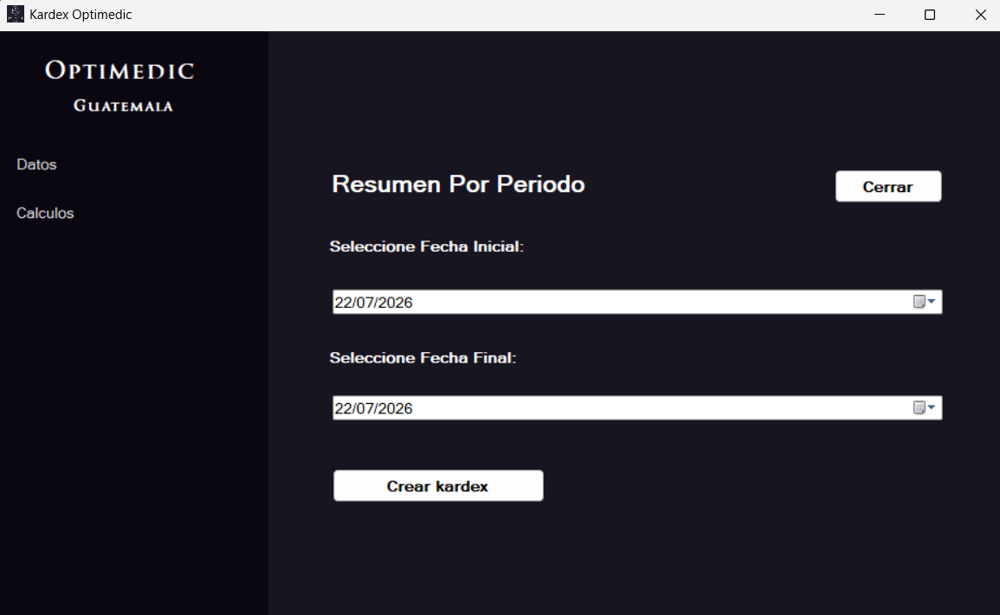

Sistema de Contabilidad para Clínica Óptica
Sistema desarrollado para optimizar la gestión administrativa y financiera de una clínica óptica. Permite controlar facturas, inventario, ventas, compras y generar reportes.
Sistema desarrollado para optimizar la gestión administrativa y financiera de una clínica óptica. Permite controlar facturas, inventario, ventas, compras y generar reportes.


